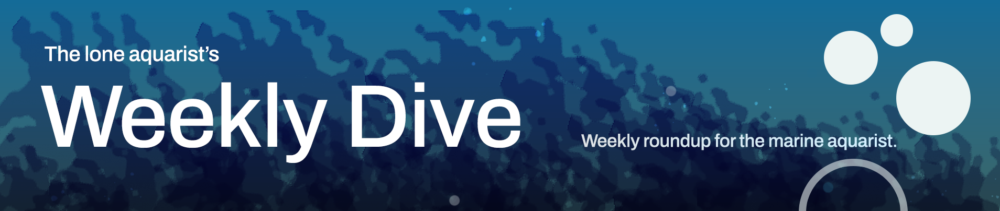
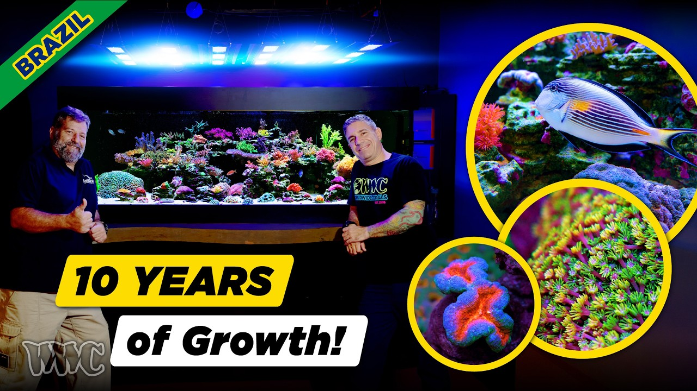

Friday, October 16, 2026 · 28 items · back issues
Howdy, it's Isaac again.
Happy Friday, reefing family, and welcome back to my Weekly Dive.
Here are the biggest things worth knowing:
Let's dive into the news touching our hobby…
14 min+1 similar SaltwaterAquarium.com · SaltwaterAquarium · Oct 15 · youtube.com
Video tour of a Munich reef shop showcasing Tunze equipment and the owner's SPS and soft coral collection. Practical husbandry insights—dry rock aquascaping, water changes, Aiptasia management—from an experienced setup.
19 min SaltwaterAquarium.com · SaltwaterAquarium · Oct 13 · youtube.com
Polo Reef documents quarantining and establishing 450 anthias in a 17K-gallon system. The detailed protocol for a difficult species at scale offers practical insight into professional acclimation technique.
18 min Polo Reef · Polo Reef by Andrew Sandler · Oct 16 · youtube.com
A podcast episode explores tank cycling, microbiome, and microdiversity with guest input. Foundational topics for reef keepers, though the format and lack of detail limit specificity.
1h 18m ReefDudes · Oct 15 · youtube.com
Miami Coral Club launches monthly community meetup series starting October 22. Local reef club event for networking and learning about Miami's wild reefs.
Reefs.com · Colin Foord · Oct 13 · reefs.com
Reef-A-Palooza vendors recommend beginner corals including Duncans, Zoanthids, Hammer corals, and Acans for their hardiness and fast growth. Expert consensus on resilient species helps new reefers choose stocking.
8 min SaltwaterAquarium.com · SaltwaterAquarium · Oct 10 · youtube.com
Demonstration of rapid coral bleaching recovery via contact-mediated symbiont transfer between coral fragments. A novel mechanism for assisted recovery could inform both restoration and aquarium-based interventions.
Science Advances · Daniel S. Collins et al. · Oct 14 · doi.org
Laboratory study of Orbicella faveolata physiology under suspended sediment and elevated temperature. Clarifies stressor interactions critical for understanding coral stress responses in closed systems.
Environmental Monitoring and Assessment · Keisha D. Bahr et al. · Oct 13 · doi.org
Cold and warm stress disrupt coral larval development through different genetic mechanisms in Orbicella faveolata. Understanding how temperature extremes affect early life stages informs reef restoration and aquaculture efforts.
BMC Genomics · Benjamin H. Glass et al. · Oct 12 · doi.org
Three Vibrio isolates from coral Pachyseris speciosa characterized with draft genomes. Pathogenic Vibrio in tropical corals is directly relevant to coral disease and reef husbandry.
Microbiology Resource Announcements · Hau Ching Luk et al. · Oct 14 · doi.org
Study integrates active and passive eDNA sampling for coral reef biomonitoring in Hawai'i, exploring community-based assessment methods. Demonstrates practical monitoring tools for reef health assessment that hobbyists could eventually adapt.
BMC Zoology · Cécile M. Vimond et al. · Oct 13 · doi.org
Coral symbiotic algae drive molybdenum isotope fractionation in coral skeletons, not seawater alone. Tracing how symbionts shape skeletal chemistry deepens understanding of coral physiology and trace-metal uptake.
Geophysical Research Letters · Xuefei Chen et al. · Oct 12 · doi.org
Cryptic lineages of Montastraea cavernosa show distinct metabolomic responses to environmental stress, with some segregated by depth. Understanding between-lineage adaptation informs coral-nursery selection and restoration strategy.
Metabolomics · Dominique N. Gallery et al. · Oct 10 · doi.org
Experimental test of how habitat saturation and dispersal risk influence cooperation and conflict in humbug damselfish colonies. Understanding social behavior in obligate coral-dwellers illuminates how to keep them in systems and encourage natural breeding.
Proceedings of the Royal Society B Biological Sciences · Rebecca Branconi et al. · Oct 14 · doi.org
Humbug damselfish reared in low-complexity coral environments showed altered spatial learning and increased reliance on turn-based strategies. Habitat structure affects fish cognition, relevant to tank design and fish behavior.
Animal Cognition · Helen von Drenkmann et al. · Oct 11 · doi.org
QM Aquacultures has bred the Peacekeeper Maroon Clownfish, adding to their recent aquaculture wins. Captive-bred maroons offer hobbyists a sustainable alternative to wild-collected specimens.
Reef Builders · Raj Shingadia · Oct 16 · reefbuilders.com
Parapercis pacifica sandperch use territorial resource defense to maintain harem mating systems on Okinawan reefs. Behavioral ecology of reef fish informs understanding of species kept in captivity.
Environmental Biology of Fishes · Natsumi Takayama et al. · Oct 12 · doi.org
Review introduces the 'settlement-sphere' concept—the microenvironmental factors governing coral larval recruitment success. Understanding recruitment mechanics informs both conservation strategy and captive-breeding design.
+1 similar Frontiers in Marine Science — Journal · Daniel Wangpraseurt · Oct 16 · frontiersin.org
Internal waves at Dongsha Atoll in the South China Sea drive temperature fluctuations and upwell cool, nutrient-rich water onto reef slopes, modulated by mesoscale circulation. Illuminates how physical oceanography sustains reef environments under natural conditions.
Geophysical Research Letters · Alex S. J. Wyatt et al. · Oct 15 · doi.org
Analysis of bleaching resilience and recovery prospects in Western Atlantic corals through thermal acclimatization and symbiont shuffling. Direct evidence on whether and how reef corals can survive warming matters to everyone tracking the hobby's foundation.
Frontiers in Marine Science · Jeremy B. C. Jackson · Oct 14 · doi.org
During the 2024 global bleaching event, high-latitude corals at Jeju Island showed taxon- and depth-specific bleaching patterns, with Alveopora japonica suffering heavy mortality. Range-edge bleaching responses inform predictions for coral survival under warming.
Diversity · Taihun Kim et al. · Oct 12 · doi.org
Study examines whether artificial habitat structures can restore reef structural complexity lost to bleaching, disease, and hurricanes in the Caribbean. Direct evidence on reef recovery strategies relevant to understanding wild-reef dynamics that inform the hobby.
Frontiers in Marine Science — Journal · John H. Hunt · Oct 15 · frontiersin.org
Two Scripps studies show that underwater sound can aid coral reef restoration and rebuild fish communities. Understanding reef recovery mechanisms informs broader conservation science that shapes wild-stock availability and reef health trends affecting the hobby.
Scripps Institution of Oceanography — Bluesky · Oct 9 · bsky.app
Report documents 8,250+ shark and ray deaths from a harmful algal bloom in South Australia. Large-scale wild-reef mortality from environmental stress illustrates ecosystem fragility affecting species collection and trade.
Great Southern Reef Foundation — Bluesky · Oct 15 · bsky.app
Canada proposes adding or reclassifying 15 aquatic species under the Species at Risk Act. Trade and import regulations for reef fauna could shift; monitor for ornamental species affected.
UBC Oceans — Bluesky · Oct 13 · bsky.app
NOAA completes first RESTORE-funded coral sampling mission in the Gulf. Government-backed wild-coral monitoring and resilience research informs conservation baseline.
NOAA National Ocean Service — Newsletter · Oct 15 · links-1.govdelivery.com
Survey of mesenchymal tumors in commercial fish species from the Arabian Gulf reveals disease indicators in wild populations. Provides baseline data on fish health and ecosystem stressors, though focused on food-species rather than aquarium fauna.
Frontiers in Marine Science — Journal · Mustafa M. Ibrahim · Oct 15 · frontiersin.org

This Reef Has Grown for 10 Years! | SPS, Chalices & Reef Keeping in BrazilTour of a mature 10-year Brazilian reef tank with established corals, monthly ICP testing, and minimal water changes. Ricardo's decade-long system demonstrates long-term husbandry strategy and trace-element management at scale.
14 min World Wide Corals · Oct 15 · youtube.com
One email a week, free. Every item links to its source.